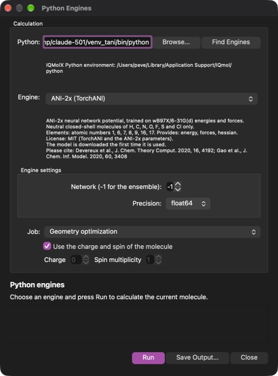
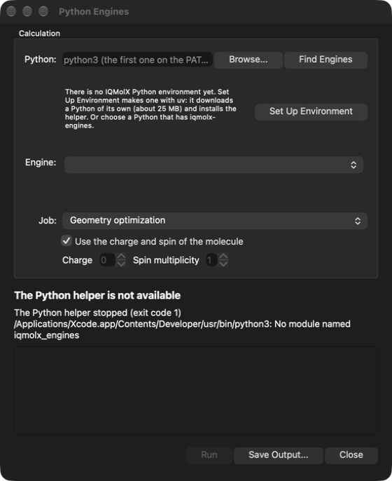
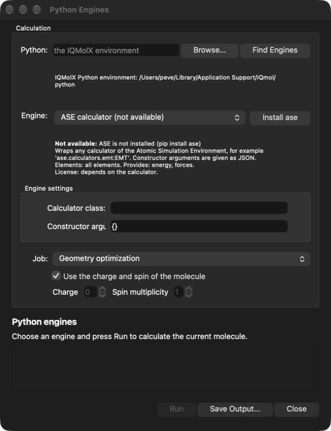
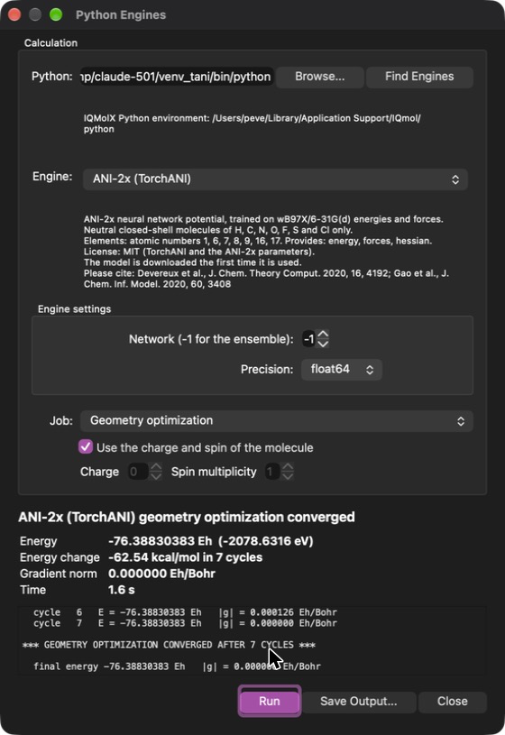

Besides the xtb methods, IQMolX can calculate energies, optimize geometries and find vibrational frequencies with methods written in Python: neural network potentials such as ANI-2x, or any calculator of the Atomic Simulation Environment (ASE). They run on the molecule in the Viewer like the xtb calculations, and the results are added to it in the same way.
The methods live in a Python environment, not in IQMolX. The first time you use them IQMolX can make that environment for you; this page explains how, what is downloaded and where it is kept. The window is opened with the menu option Calculation→Python Engines.

The window with the ANI-2x engine selected: the Python that runs the
engines at the top (the field shows the interpreter in use; here it is a
separate environment that has the packages of ANI-2x, and with the field empty
IQMolX uses its own environment), then the engine with its description, its
settings, the job and the charge and spin.
Nothing has to be installed on your computer beforehand, and no Python either. The first time the window is opened it says that there is no IQMolX Python environment yet:

Press Set Up Environment. IQMolX then uses uv, a tool that comes with the application, to
The commands that are run are shown in the window as they start, together with their output, and the step can be cancelled. It takes about a minute and needs an internet connection. When it is finished the window uses the new environment and lists the engines. This is only done once.
The environment is kept in the folder ~/Library/Application Support/IQmol/python. See Where Things Are Kept to find out how to remove it.
If IQMolX was built from the source it does not contain uv; install
it first, for example with brew install uv, and the button will work.
The window says when uv cannot be found.
If you already have a Python with the engines you want, for example a conda
environment, enter its location in the Python field (or press
Browse...) and press Find Engines. That Python needs the
iqmolx-engines package: it is the file iqmolx_engines-*.whl in
IQMolX.app/Contents/Resources/python, which you install with
pip install and the path of the file. The Install buttons
described below only work for environments made with Set Up Environment (or
another virtual environment) and need uv. With the field empty IQMolX uses its
own environment.
The list of engines comes from the environment, so it can grow without changing IQMolX. An engine that needs packages which are not installed yet is still listed, as not available. The window says what is missing and offers to install it:

Install downloads the packages from the Python Package Index into the environment, showing the output of uv as it goes. When it is done the engine can be used.
These engines come with IQMolX:
| Demo | A toy potential that does not describe real molecules. It needs nothing and is useful to try out the window. |
| ANI models (TorchANI) | Eight neural network potentials of the ANI family, from ANI-1x and ANI-2x to a model with implicit solvents, see below. They need the packages torch and torchani (together about 1 GB of disk space). |
| Egret models (Rowan, MACE) | Five neural network potentials for organic molecules, see below. They need the package mace-torch (which brings PyTorch). |
| PySCF | Real Hartree-Fock and density functional calculations, see below. Needs the package pyscf (about 100 MB with its dependencies). |
| ASE calculator | Uses any calculator of ASE, see below. Needs the package ase. |
Others can be added by anybody who writes an engine plugin; the
developer guide PLUGINS.md in the python folder of the IQMolX
source describes how.
Choose the engine and the job:
Below the engine are its settings, which are different for each engine (they come from the engine itself). Use the charge and spin of the molecule is on unless you want other values for the calculation; engines that cannot handle charged or open-shell molecules say so, and refuse them. The settings are remembered from one session to the next.
Press Run. The window shows the progress and, when the calculation has finished, a summary:

The energy is given in Hartree and in eV together with the dipole moment and the time, and for an optimization the energy change and the number of cycles. Save Output... keeps the text of the progress. Cancel stops the calculation; one evaluation of a neural network cannot be interrupted, so it finishes first. The first run of an engine takes longer because the engine is loaded (and, the very first time, downloaded); it then stays loaded for the following calculations.
Only molecules that are shown in the Model View (the ones that are
checked) are calculated.
The ANI models are neural network potentials, ensembles of eight networks trained on energies and forces of quantum chemistry calculations. They are much faster than the methods they learned from. Each model is an engine of its own in the list, because each has its own elements, level of theory and parameters. All of them are limited to neutral, closed-shell molecules and to the elements in the table; anything else is refused with a message, and the options for charge and spin are not available.
| Engine | Learned from | Elements | Download | Checked here |
|---|---|---|---|---|
| ANI-2x | wB97X/6-31G(d) | H, C, N, O, F, S, Cl | 55 MB | run; forces and Hessian checked |
| ANI-1x | wB97X/6-31G(d), by active learning | H, C, N, O | 10 MB | run; forces and Hessian checked |
| ANI-1ccx | CCSD(T)*/CBS, by transfer learning from ANI-1x | H, C, N, O | 10 MB | run; forces and Hessian checked |
| ANI-1xnr | BLYP/TZV2P; a reactive potential. Its energies are on a different scale from the other ANI models (water is about −468 eV, not −2079 eV): only energy differences mean something | H, C, N, O | 21 MB | run; forces and Hessian checked |
| ANI-2xr | wB97X/6-31G(d) with an added repulsion potential and a smoother potential energy surface | H, C, N, O, F, S, Cl | 55 MB | run; forces and Hessian checked |
| ANI-2dr | B97-3c with added dispersion and repulsion potentials | H, C, N, O, F, S, Cl | 55 MB | run; forces and Hessian checked |
| ANI-r2s (experimental) | r2SCAN-3c, in vacuum or with the implicit solvent SMD: water, chloroform or acetonitrile (the Solvent setting) | H, C, N, O, F, S, Cl | 55 MB for each solvent | run in vacuum and in water (the water model lowers the energy of water); chloroform and acetonitrile not run |
| ANI-2x with MBIS charges (experimental) | ANI-2x, plus a network for MBIS atomic charges; the dipole is calculated from the point charges | H, C, N, O, F, S, Cl | 62 MB | run; forces and Hessian checked |
Which one to use? ANI-2x covers the most elements and is the standard choice. ANI-1ccx is the one aiming at coupled-cluster accuracy, for H, C, N and O. ANI-2xr and ANI-2dr have smoother potential energy surfaces, which helps optimizations and dynamics; ANI-2dr includes dispersion. ANI-r2s is the way to get an implicit solvent. The experimental models may change. The energies of the models are not comparable with each other, because they approximate different methods.
The models are run through the TorchANI package; both the code and the parameters are MIT licensed. The first time a model is used its parameters (the sizes are in the table) are downloaded from Hugging Face and kept on your computer, so an internet connection is needed once per model. No login is needed. The settings of every ANI engine are the Network (the ensemble of all eight, or a single one, which is faster and a little less accurate) and the Precision (float64, the default, gives smoother forces for optimizations and frequencies than float32). The frequencies use the second derivatives of the network directly.
Please cite the paper of the model and TorchANI:
Egret is a family of neural network potentials made by Rowan Scientific with the MACE architecture, for organic and bioorganic molecules. The code and the model files are MIT licensed (the license file and the description of the Egret repository and the preprint say so). Each model is an engine of its own:
| Engine | What it is | Elements | Download | Checked here |
|---|---|---|---|---|
| Egret-1 | The general-purpose model, optimized for bioorganic molecules | H, C, N, O, F, P, S, Cl, Br, I | 23 MB | run; forces checked against finite differences |
| Egret-1e | Egret-1 with main-group chemistry added; better thermochemistry | the same and Si | 24 MB | run; forces checked against finite differences |
| Egret-1t | Egret-1 with transition states added; for chemical reactivity | H, C, N, O, F, P, S, Cl, Br, I | 23 MB | run; forces checked against finite differences |
| Egret-1M | A smaller Egret-1 with a lower-resolution equivariance: fast, with a smaller memory footprint | H, C, N, O, F, P, S, Cl, Br, I | 9 MB | run; forces checked against finite differences |
| Egret-1S | A smaller Egret-1 that is invariant only: the fastest and smallest | H, C, N, O, F, P, S, Cl, Br, I | 4 MB | run; forces checked against finite differences |
The models are for neutral molecules in the gas phase: they have no input for a charge or a spin, so charged and open-shell molecules, and other elements, are refused with a message. (The elements are those of the preprint, and were checked against the model files: Egret-1, -1t, -1M and -1S have the same ten, Egret-1e has silicon as well.) The settings are the Precision (float64 gives smoother forces than float32). The models are fast: one energy and forces of benzene takes about 0.07 s with Egret-1 and 0.03 s with Egret-1S on an Apple Silicon Mac. The models give no Hessian (they are compiled files in which that routine cannot run), so frequencies are built from forces at displaced geometries, six calculations per atom, which is quick for these models.
The model file is downloaded the first time a model is used, from a fixed version of the Egret repository on GitHub, and checked against the hash that GitHub lists for the file. It is kept in ~/Library/Caches/IQMolX/engines, which can be deleted at any time. The package mace-torch is needed (it needs Python 3.11 or newer, which the IQMolX environment has) and is installed with the Install button.
Please cite the preprint Egret-1: Pretrained Neural Network Potentials
for Efficient and Accurate Bioorganic Simulation (Rowan Scientific, 2025,
rowansci.com/publications/egret-1-pretrained-neural-network-potentials) and
MACE: I. Batatia et al., NeurIPS 2022.
PySCF (Apache 2.0 license) is a quantum chemistry program written in Python. This engine gives IQMolX real ab initio calculations: Hartree-Fock or a density functional with a Gaussian basis set, for any charge and any spin multiplicity (restricted for closed shells, unrestricted for open shells). It provides the energy, the forces, the Hessian (so optimizations and frequencies), the dipole moment and Mulliken charges. Nothing is downloaded except the package itself (about 100 MB with its dependencies, installed with the Install button).
The settings:
How slow is it? On an Apple Silicon Mac a water molecule takes about a second for the energy and forces with B3LYP/def2-SVP; iodomethane takes several seconds. The cost grows quickly with the size of the molecule and of the basis set, so this engine is for small molecules; a geometry optimization needs one calculation per step and frequencies need the second derivatives. For the tpss, m06-2x and r2scan functionals the Hessian is built from differences of forces (the analytic one of the PySCF version used here is not accurate for them), which takes about 6N calculations.
Some functionals of PySCF are not offered: wB97M-V takes minutes for a water molecule, wB97X-D is not implemented, and the dispersion-corrected variants (such as b97-d3bj) need the extra package pyscf-dispersion. If the SCF does not converge the engine says so; a smaller basis set or no density fitting can help.
It was checked against the textbook Hartree-Fock energy of H2 in the STO-3G basis (−1.116759 Eh at 0.74 Å), against finite differences of its energies and forces, and with the ionization energy of water (B3LYP/def2-SVP gives 12.4 eV, the experiment 12.6 eV).
Please cite Q. Sun et al., J. Chem. Phys. 153, 024109 (2020) and
Q. Sun, WIREs Comput. Mol. Sci. 8, e1340 (2018).
The ASE engine runs any calculator of the Atomic Simulation Environment, and ASE has calculators for most methods used in chemistry: tight-binding and semiempirical methods, quantum chemistry programs and machine learning potentials. The engine gives IQMolX the energy and the forces; for vibrational frequencies the Hessian is built from forces at displaced geometries (six calculations per atom), which is slow with a quantum chemistry program.
There are two fields to fill in:
Charge and spin. The charge and the spin multiplicity of the window (the ones of the molecule, unless you changed them) are passed to the calculator for every calculation, so a cation is a cation. They reach calculators that have charge, multiplicity or mult as arguments (TBLite, MOPAC and Q-Chem list them), and calculators that read them from the atoms (AIMNet2). A calculator that takes them as arguments but does not list them (ORCA, Gaussian, NWChem, Psi4) needs them in the Constructor arguments, with any value, for example "charge": 0, "mult": 1; the values of the window then replace them. Without that such a calculator uses a neutral singlet, so check the energy of a charged molecule.
The tables list calculators that are useful in chemistry. The last column says how far each was checked here, because not everything could be run: run means it was run through IQMolX's helper, with the result given; checked means the class and its arguments were read from the installed ASE, but the program it needs is not installed here; from the source means the names come from the source of the package, which was not installed or run. Please check the documentation of each package for the full set of arguments.
These are toy potentials, not chemistry, but they run anywhere and are good for trying out the window.
| Calculator | What to fill in |
|---|---|
| EMT Effective-medium theory for the metals Al, Cu, Ag, Au, Ni, Pd, Pt (and H, C, N, O on them). Checked here: run: Cu2 at 2.5 Å, 3.7614 eV |
Calculator class: ase.calculators.emt:EMT Constructor arguments: {} |
| Lennard-Jones A 12-6 pair potential in eV and Å; the values given are about those of argon. Checked here: run: Ar2 at 3.8 Å, −0.0102 eV |
Calculator class: ase.calculators.lj:LennardJones Constructor arguments: {"epsilon": 0.0103, "sigma": 3.4} |
| Morse potential A Morse pair potential with ASE's default parameters. Checked here: run: H2 at 0.8 Å, 4.3829 eV |
Calculator class: ase.calculators.morse:MorsePotential Constructor arguments: {} |
| Calculator | What to fill in |
|---|---|
| xTB methods (tblite) The xTB tight-binding methods of the tblite library, the family of the xtb window. "method" is "GFN2-xTB", "GFN1-xTB" or "IPEA1-xTB". Also "solvation": ["alpb", "water"] for an implicit solvent and "electronic_temperature": 300.0 (K). "verbosity": 0 silences the printout of every calculation. Needs: the package tblite Checked here: run: water, GFN2-xTB −137.9681 eV, GFN1-xTB −156.9679 eV, IPEA1-xTB −158.5395 eV, GFN2-xTB with ALPB water −138.3647 eV; the cation is 18.3 eV higher, so the charge is passed on |
Calculator class: tblite.ase:TBLite Constructor arguments: {"method": "GFN2-xTB", "verbosity": 0} |
| MOPAC The semiempirical methods of the MOPAC program (PM7 is the default of the calculator). Needs: the MOPAC program; ASE finds it through the variable ASE_MOPAC_COMMAND Checked here: the class and its arguments were read from ASE; the program is not installed here |
Calculator class: ase.calculators.mopac:MOPAC Constructor arguments: {"method": "PM7"} |
| DFTB+ Density functional tight binding with the DFTB+ program. Needs: the DFTB+ program and its Slater-Koster parameter files Checked here: the class and its arguments were read from ASE; the program is not installed here |
Calculator class: ase.calculators.dftb:Dftb Constructor arguments: see the ASE documentation |
These calculators write the input for a program, run it and read the result, so the program has to be installed on your computer (and, for most, ASE has to be told where it is, in ~/.config/ase/config.ini or with an environment variable; see the ASE documentation of the calculator). Each calculation starts the program, which is slow compared with the methods above. The programs have their own licenses.
| Calculator | What to fill in |
|---|---|
| Psi4 Open source quantum chemistry. The defaults of the calculator are HF and aug-cc-pVTZ. Needs: the Psi4 program Checked here: the class and its arguments were read from ASE; the program is not installed here |
Calculator class: ase.calculators.psi4:Psi4 Constructor arguments: {"method": "b3lyp", "basis": "cc-pvdz", "charge": 0, "multiplicity": 1} |
| ORCA The first line of the input as in an ORCA input file; further blocks in "orcablocks". Needs: the ORCA program Checked here: the class and its arguments were read from ASE; the program is not installed here |
Calculator class: ase.calculators.orca:ORCA Constructor arguments: {"charge": 0, "mult": 1, "orcasimpleinput": "B3LYP def2-SVP"} |
| Q-Chem The defaults of the calculator are HF and 6-31G*. Needs: the Q-Chem program Checked here: the class and its arguments were read from ASE; the program is not installed here |
Calculator class: ase.calculators.qchem:QChem Constructor arguments: {"method": "b3lyp", "basis": "6-31G*", "charge": 0, "multiplicity": 1} |
| NWChem Plane-wave and Gaussian-basis quantum chemistry. Needs: the NWChem program Checked here: checked (the class); the argument names are from the ASE documentation |
Calculator class: ase.calculators.nwchem:NWChem Constructor arguments: {"xc": "B3LYP", "basis": "6-31G*", "charge": 0, "mult": 1} |
| Gaussian The Gaussian program. Needs: the Gaussian program Checked here: checked (the class); the argument names are from the ASE documentation |
Calculator class: ase.calculators.gaussian:Gaussian Constructor arguments: {"method": "b3lyp", "basis": "6-31g*", "charge": 0, "mult": 1} |
| GAMESS-US and TURBOMOLE Two more quantum chemistry programs. Needs: the program Checked here: checked (the classes) |
Calculator class: ase.calculators.gamess_us:GAMESSUS ase.calculators.turbomole:Turbomole Constructor arguments: see the ASE documentation |
These need PyTorch, which is large (about 1 GB), and download their model the first time. ANI-2x and the other ANI models have engines of their own, above, which is the quickest way to start, and so do the Egret models, which are comparable models for organic molecules under the MIT license (the MACE-OFF models are under a license that does not permit commercial use).
| Calculator | What to fill in |
|---|---|
| MACE-OFF The MACE-OFF23 force fields for organic molecules; "model" is "small", "medium" or "large". The model is under the Academic Software License, which does not permit commercial use. Please cite Kovacs et al., arXiv:2312.15211. Needs: pip install mace-torch Checked here: from the source |
Calculator class: mace.calculators:mace_off Constructor arguments: {"model": "medium", "device": "cpu"} |
| AIMNet2 A neural network potential from the Isayev group for neutral and charged organic molecules (see its documentation for the elements). It takes the charge of the window. Needs: pip install "aimnet[ase]" Checked here: from the source |
Calculator class: aimnet.calculators:AIMNet2ASE Constructor arguments: {"base_calc": "aimnet2"} |
What does not work through this engine: a calculator whose arguments are Python objects and not text. The UMA models of fairchem are an example: their calculator is made from a model that has been loaded in advance. They need an engine of their own (an engine plugin, see the developer guide PLUGINS.md).
The electronic structure of the result is not part of the ASE engine: there are no orbitals and no infrared intensities. For orbitals use the xtb window.
Please cite A. H. Larsen et al., J. Phys.: Condens. Matter 29, 273002
(2017), and the paper of the calculator that you use. Weights and programs
have their own licenses; the ones named above are not a complete list, so
check the license of anything that you use.
The window explains what happened in the message above the progress text. The usual causes are:
| Unable to start the Python interpreter | The Python in the Python field does not exist (for example the environment was deleted). Empty the field and press Set Up Environment, or choose another Python. |
| uv was not found | Only for IQMolX built from the source: install uv (brew install uv). |
| uv failed while setting up or installing | The last lines of its output are shown. Most often there is no internet connection, or a network that needs a proxy: uv uses the proxy settings of the environment IQMolX was started from, so start IQMolX from a terminal in which they are set. |
| Fill in: ... next to the Run button | An engine setting that has no default is still empty (for the ASE engine, the calculator class). Run works once it is filled in. |
| Not available next to an engine | Packages are missing: use the Install button, or install them yourself if you use your own Python. |
| Cannot load the ANI-2x model | The parameters could not be downloaded; check the internet connection and try again. |
| Unsupported element, Unsupported charge | The engine does not handle this molecule, see its description in the window. |
| The Python helper stopped | The program that runs the engines ended unexpectedly, for example because the computer ran out of memory; the end of its error output is shown. Press Run again to start it again. |
| Nothing was calculated | There is no molecule with atoms that is shown in the Model View. |
A change made to an engine plugin that was already loaded needs a restart of
IQMolX to take effect.
Setting up and using the engines downloads software. All of it comes from the sources that the tools themselves use:
| Python | from the python-build-standalone project (through uv, from GitHub); kept by uv in ~/.local/share/uv/python. |
| Packages (torch, torchani, ase, numpy) | from the Python Package Index (PyPI); installed in the environment, which is ~/Library/Application Support/IQmol/python; uv keeps downloaded files in ~/.cache/uv. |
| Model parameters | ANI-2x from Hugging Face; kept in ~/.local/share/Torchani. |
To remove the Python environment of IQMolX, quit IQMolX and move the folder
~/Library/Application Support/IQmol/python to the Trash; the next time
the window is opened it offers to set it up again. The folders of uv and of the
model parameters are only caches and can be removed too, but uv is shared with
anything else on your computer that uses it, so leave them if you do.